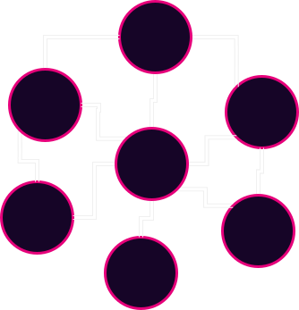

<!DOCTYPE html>
<html lang="en">

<head>
  <meta charset="utf-8" />
  <meta name="viewport" content="width=device-width, initial-scale=1.0, maximum-scale=1.0, user-scalable=no" />

  <title>Peer-to-Peer (P2P) Networking</title>
  <link rel="icon" href="./../../assets/favicon.svg" />
  <link rel="shortcut icon" href="./../../assets/favicon.png" />
  <link rel="stylesheet" href="./../../dist/reset.css" />
  <link rel="stylesheet" href="./../../dist/reveal.css" />
  <link rel="stylesheet" href="./../.././assets/styles/PBA-theme.css" id="theme" />
  <link rel="stylesheet" href="./../../css/highlight/shades-of-purple.css" />

  <link rel="stylesheet" href="./../.././assets/styles/custom-classes.css" />

</head>

<body class="site">
  <header class="site-header">
    <!-- This logo is a link only on the watching server, not the production build -->
    <a href="">
      
    </a>
  </header>
  <main class="reveal">
    <article class="slides">
      <section  data-markdown><script type="text/template">

# Peer-to-Peer Networking
</script></section><section ><section data-markdown><script type="text/template">
## From Circuit Switching to **Packet Switching**

- Mode of data transmission in which a message is broken into a number of parts (packets) that are sent independently <!-- .element: class="fragment" data-fragment-index="2" -->
- Packets are sent over whatever route is optimal <!-- .element: class="fragment" data-fragment-index="3" -->
- Packets are reassembled at the destination <!-- .element: class="fragment" data-fragment-index="4" -->

<aside class="notes"><p>Standard telephone networks used circuit switching, where a physical wire connected two communicating ends.</p>
<p>Packet-switching, on the other hand, is a more decentralized approach that can divide data, send it across the network, and reconstruct it.</p>
<p>The network is now able to survive partial destruction because there is no longer a single physical circuit between machines.</p>
<p>It was the first step toward a distributed and resilient network</p>
</aside></script></section><section data-markdown><script type="text/template">
## Packets


<aside class="notes"><p>Mention that headers contain addressing, destination information, and ordering, typically depending on the context</p>
</aside></script></section><section data-markdown><script type="text/template">
## Routing


<aside class="notes"><p>We have a message that needs to be sent between two nodes.</p>
</aside></script></section><section data-markdown><script type="text/template">
## Routing


<aside class="notes"><p>A Route is composed of all the nodes that will be traversed before reaching the ends.</p>
<p>Not all packets need to traverse the same route</p>
</aside></script></section><section data-markdown><script type="text/template">
## What if a node goes down?


</script></section><section data-markdown><script type="text/template">
## Another Route is Used


<aside class="notes"><p>That&#39;s the strength of Packet Switching Networks, they are resilient and can survive a partial shutdown of the network</p>
<p>As said before, not all packets need to be routed in the same way</p>
</aside></script></section><section data-markdown><script type="text/template">
## ARPANET

- First operational packet-switching network <!-- .element: class="fragment" data-fragment-index="2" -->
- Developed in the late 1960s by DARPA(The Defense Advanced Research Projects Agency) <!-- .element: class="fragment" data-fragment-index="3" -->
- Laid the foundation for the modern internet <!-- .element: class="fragment" data-fragment-index="4" -->

<aside class="notes"><p>Arpanet followed a more Client-Server structure, where people were asking for papers, documents, and other information</p>
</aside></script></section></section><section  data-markdown><script type="text/template">
## Peer-to-Peer (P2P) Networks

- Unlike client-server model, all nodes (peers) are equal participants <!-- .element: class="fragment" data-fragment-index="2" -->
- P2P is a decentralized form of network structure <!-- .element: class="fragment" data-fragment-index="3" -->
- Data is shared directly between systems without a central server <!-- .element: class="fragment" data-fragment-index="4" -->
- Peers contribute resources, including bandwidth, storage space, and processing power <!-- .element: class="fragment" data-fragment-index="5" -->

<aside class="notes"><p>As opposed to client-server structures, p2p structures are a different type of network in which all nodes are at the same level</p>
</aside></script></section><section  data-markdown><script type="text/template">
## Historical P2P applications

<aside class="notes"><p>Napster, Limewire, BitTorrent</p>
</aside></script></section><section ><section data-markdown><script type="text/template">
## Napster

- Launched in 1999, first P2P sharing platform <!-- .element: class="fragment" data-fragment-index="2" -->
- Central server for indexing, P2P for transfers <!-- .element: class="fragment" data-fragment-index="3" -->
- Shutdown in 2001 due to legal issues <!-- .element: class="fragment" data-fragment-index="4" -->

<aside class="notes"><p>Napster&#39;s story is closely tied with the band Metallica.
In 2000, Metallica discovered that a demo of their song &quot;I Disappear&quot; was being circulated via Napster before its official release.
This led to Metallica filing a lawsuit against Napster for copyright infringement.
Napster had to comply by banning hundreds of thousands of users from their platform who were sharing Metallica&#39;s music.
This was a turning point in digital copyright law and played a significant role in Napster&#39;s eventual shutdown in 2001.</p>
</aside></script></section><section data-markdown><script type="text/template">
## Napster Setup


</script></section><section data-markdown><script type="text/template">
## Napster Setup


</script></section><section data-markdown><script type="text/template">
## Napster Setup


</script></section><section data-markdown><script type="text/template">
## Napster Setup


</script></section></section><section ><section data-markdown><script type="text/template">
## Limewire

- Free Software p2p file sharing client <!-- .element: class="fragment" data-fragment-index="2" -->
- In its history, it has mainly used two protocols: <!-- .element: class="fragment" data-fragment-index="3" -->
  - Gnutella <!-- .element: class="fragment" data-fragment-index="3" -->
  - BitTorrent <!-- .element: class="fragment" data-fragment-index="3" -->
</script></section><section data-markdown><script type="text/template">
## Gnutella

- Each node serves as both a client and a server <!-- .element: class="fragment" data-fragment-index="2" -->
- Query recursively all connected nodes for files <!-- .element: class="fragment" data-fragment-index="3" -->
- It does not just flood the network, it does it intelligently using concepts such as:
  <!-- .element: class="fragment" data-fragment-index="4" -->
  - Infection Factor
  <!-- .element: class="fragment" data-fragment-index="5" -->
  - TTL (Time To Live)
  <!-- .element: class="fragment" data-fragment-index="5" -->


<!-- .element: class="fragment" data-fragment-index="5" -->

<aside class="notes"><ul>
<li><p>Check local filestore for file and if it is not available, forward the request to all connected peers.</p>
</li>
<li><p>Gnutella generates a significant amount of network traffic</p>
</li>
</ul>
<p>Deep explanation of gossiping and how Gnutella gossiping works: <a href="https://nakamoto.com/gnutella/">https://nakamoto.com/gnutella/</a></p>
</aside></script></section><section data-markdown><script type="text/template">
## BitTorrent

First launched using Trackers: <!-- .element: class="fragment" data-fragment-index="2" -->

- Files are split into multiple pieces <!-- .element: class="fragment" data-fragment-index="3" -->
- .torrent files contain the hash of the pieces <!-- .element: class="fragment" data-fragment-index="4" -->
- Trackers saves which peers in the network have which file
<!-- .element: class="fragment" data-fragment-index="5" -->

```rust
HashMap<FileId, Vec<Peer>>
```

<!-- .element: class="fragment" data-fragment-index="5" -->

- You can download different pieces by different peers in parallel <!-- .element: class="fragment" data-fragment-index="6" -->

<aside class="notes"><p>More efficient peer-to-peer (p2p) file sharing networks than Gnutella (but more centralized).</p>
<p>Each data was split into multiple packets.</p>
<p>You could request from each peer in the swarm a piece of the file you wanted to download to really take advantage of the increased bandwidth offered by the p2p network</p>
</aside></script></section><section data-markdown><script type="text/template">

</script></section><section data-markdown><script type="text/template">
## BitTorrent

Later introduced, **Trackerless** mode:

<!-- .element: class="fragment" data-fragment-index="7" -->

- Does not require Tracker nodes
<!-- .element: class="fragment" data-fragment-index="8" -->
- How does it achieve that? How is the knowledge of who has what is shared across the network?
<!-- .element: class="fragment" data-fragment-index="9" -->

<aside class="notes"><p>Trackerless was added later to support fully decentralized networks. It uses something called Distributed Hash Table (DHT), particularly Kademlia (a specific type of DHT)</p>
</aside></script></section><section data-markdown><script type="text/template">
### Distributed Hash Table - DHT

Same `HashMap` as before, but distributed:

<!-- .element: class="fragment" data-fragment-index="2" -->

- key: hash of the .torrent file (=FileId)
<!-- .element: class="fragment" data-fragment-index="3" -->
- value: list of peers who own the file <!-- .element: class="fragment" data-fragment-index="4" -->

<aside class="notes"><p>Instead of going directly to the tracker node, a single peer who knows the info hash could use the DHT to ask the network for the list of needed peers</p>
</aside></script></section><section data-markdown><script type="text/template">
### Kademlia

- Each node in the network has a NodeId <!-- .element: class="fragment" data-fragment-index="2" -->
- Keys are the same length of NodeIds <!-- .element: class="fragment" data-fragment-index="3" -->
- NodeIds and Keys live in the same Key Space <!-- .element: class="fragment" data-fragment-index="4" -->
- XOR is used as distance metric between NodeIds and Keys <!-- .element: class="fragment" data-fragment-index="5" -->
- The knowledge of distance is used for: <!-- .element: class="fragment" data-fragment-index="6" -->
  - save known peers and values <!-- .element: class="fragment" data-fragment-index="7" -->
  - understand were to ask for new key-value pairs <!-- .element: class="fragment" data-fragment-index="8" -->

<aside class="notes"><p>The Kademlia specification is not very extensive, but here we will provide an overview of how effectively the nodes know where to ask for key-value pairs not owned by them.</p>
<p>The distance metric makes it possible to understand the distance between you and the key you are looking for. This enables knowing where to ask for the key: the closest node to the key you know of!</p>
</aside></script></section></section><section  data-markdown><script type="text/template">
<section>
    <h2>Client-Server vs Peer-to-Peer (P2P) Networks</h2>
    <table>
        <thead>
            <tr>
                <th></th>
                <th>Client-Server Network</th>
                <th>P2P Network</th>
            </tr>
        </thead>
        <tbody>
            <tr class="fragment">
                <td>Structure</td>
                <td>Centralized: One or more central servers control the network</td>
                <td>Decentralized: All nodes (peers) participate equally</td>
            </tr>
            <tr class="fragment">
                <td>Data Flow</td>
                <td>Server provides data to clients</td>
                <td>Peers directly share data with each other</td>
            </tr>
            <tr class="fragment">
                <td>Resource Management</td>
                <td>Servers manage resources and control access</td>
                <td>Peers contribute resources including bandwidth, storage space, and processing power</td>
            </tr>
            <tr class="fragment">
                <td>Scalability</td>
                <td>Can be limited by server capacity</td>
                <td>Highly scalable due to the distribution of resources</td>
            </tr>
            <tr class="fragment">
                <td>Security</td>
                <td>Centralized security measures, single point of failure</td>
                <td>Potential attack vector to the network from the outside, but also sensible to malicious actors
            </tr>
        </tbody>
    </table>
</section>
</script></section><section ><section data-markdown><script type="text/template">
### Single Point of failure - Centralized Networks


</script></section><section data-markdown><script type="text/template">
### Single Point of failure - Centralized Networks


</script></section><section data-markdown><script type="text/template">
### Single Point of failure - Decentralized Networks



<aside class="notes"><ol>
<li>No single node or nodes (CDN) have access to all of the content or files or is critical for operating the network. Each node has a copy of the data.</li>
<li>No central node carrying all of the load of traffic.</li>
</ol>
</aside></script></section><section data-markdown><script type="text/template">
### Single Point of failure - Decentralized Networks


<aside class="notes"><ol start="4">
<li>Difficult to overload the network or DOS (No single node is privileged).</li>
<li>Although many nodes are run on Centralized cloud compute platforms, they don&#39;t have to be (Typically).</li>
</ol>
<p>Mention to block production ans block peering/importing. Generally there is no one single node carrying all the block production locic and not transactions and blocks fly in the same direction to a single node, but they are gossiped around.</p>
</aside></script></section></section><section ><section data-markdown><script type="text/template">
## Overlay Network


<aside class="notes"><p>This is how you can imagine the p2p network, lines represent the knowledge of other nodes.</p>
<p>But...</p>
</aside></script></section><section data-markdown><script type="text/template">
## Underlay Network


<aside class="notes"><p>This could be the real physical connection, and something like a transatlantic cable could be connecting two completely separate sets of nodes.</p>
<p>There could be logical connections that are not physical but also the opposite</p>
</aside></script></section><section data-markdown><script type="text/template">
## The Underlay Network breaks


</script></section><section data-markdown><script type="text/template">
## What's happen to the overlay?


<aside class="notes"><p>There are two disjointed networks that will continue working on their behalf. You will learn in later lectures what could happen if this network were running a blockchain</p>
</aside></script></section></section><section  data-markdown><script type="text/template">
## Difficulties or Disadvantages

- Since it is permissionless, a node can share malicious resources <!-- .element: class="fragment" data-fragment-index="2" -->
- Latency <!-- .element: class="fragment" data-fragment-index="3" -->
- Difficult to regulate illicit activity <!-- .element: class="fragment" data-fragment-index="4" -->
- The network is limited by nodes with the weakest hardware <!-- .element: class="fragment" data-fragment-index="5" -->

<aside class="notes"><ol>
<li>eg. wrong blocks making other nodes wasting time discarting them</li>
<li>Latency may be an issue if we need to wait for many peers to receive the data produced from a single node since everyone may not have a direct connection.
Mention finality time!</li>
<li>No central point to go and snoop all users data (for better or for worse).</li>
<li>Why we have hardware requirements for blockchain networks.</li>
</ol>
</aside></script></section><section  data-markdown><script type="text/template">
<section>
    <h2>Structured vs Unstructured P2P Networks</h2>
    <table>
        <thead>
            <tr>
                <th></th>
                <th>Structured P2P Networks</th>
                <th>Unstructured P2P Networks</th>
            </tr>
        </thead>
        <tbody>
            <tr class="fragment">
                <td>Organization</td>
                <td>Nodes are organized following specific protocols and structures (like Distributed Hash Tables)</td>
                <td>Nodes are connected without any particular organization</td>
            </tr>
            <tr class="fragment">
                <td>Search Efficiency</td>
                <td>Efficient search operations due to structured nature</td>
                <td>Search operations may be less efficient and can involve flooding the network</td>
            </tr>
            <tr class="fragment">
                <td>Flexibility</td>
                <td>Less flexible as changes in topology require restructuring</td>
                <td>Highly flexible as nodes can freely join, leave, and reorganize</td>
            </tr>
            <tr class="fragment">
                <td>Privacy</td>
                <td>Data location is predictable due to structured organization</td>
                <td>Greater potential for anonymity</td>
            </tr>
        </tbody>
    </table>
</section>
</script></section><section ><section data-markdown><script type="text/template">
## Gossip Protocol


<aside class="notes"><p>Given structured or unstructured networks, messages still have to be transmitted to other nodes</p>
<p>In blockchain, nodes could gossip blocks that have been produced or received by someone else. Now it&#39;s time for that node to decide how it should be gossiped</p>
</aside></script></section><section data-markdown><script type="text/template">
## Gossip Protocol


<aside class="notes"><p>Bitcoin floods the network with requests, gossiping the block to all the known nodes, because the want share the last produced block as fast as possible.</p>
<p>Less consuming strategies could be applied, as Gnutella did, or even using advertising. Asking for more context before sending the data.</p>
<p>There are multiple ways to gossip information/blocks, and it depends on why you&#39;re sharing that information.</p>
</aside></script></section></section><section ><section data-markdown><script type="text/template">
## Discovery

1. Connect to a peer <!-- .element: class="fragment" data-fragment-index="2" -->
2. Ask peer for a list of their known nodes <!-- .element: class="fragment" data-fragment-index="3" -->
3. Connect to random subset of peers from the list <!-- .element: class="fragment" data-fragment-index="4" -->
4. Repeat steps 2 and 3 <!-- .element: class="fragment" data-fragment-index="5" -->

<aside class="notes"><p>We talked about how the network works, how it can be used, but not how to join it</p>
</aside></script></section><section data-markdown><script type="text/template">
## Initial Discovery

requires bootnodes (More on this later in Substrate)

<aside class="notes"><p>Must know someone who is participating in the network initially(Bootnode)</p>
</aside></script></section></section><section ><section data-markdown><script type="text/template">
## Attacks


<aside class="notes"><ul>
<li>Can anyone think of a way to exploit some of these networks?</li>
<li>What would be some things to try to take advantage of?</li>
</ul>
<p>There are multiple ways to attack an open network like the one we described because you can actively participate in it and behave maliciously.</p>
<ol>
<li>Distorts view of the healthy normal honest state of the network</li>
<li>Transaction confirmations can be fictions</li>
<li>Sybil Attack</li>
<li>Data Poisoning</li>
<li>Content Pollution</li>
</ol>
</aside></script></section><section data-markdown><script type="text/template">
## Eclipse Attack


</script></section><section data-markdown><script type="text/template">
## Eclipse Attack Execution

1. Flood a target node with a bunch of malicious peer addresses <!-- .element: class="fragment" data-fragment-index="2" -->
1. The targeted node then stores these malicious peers and utilizes them when re-syncing on next bootup <!-- .element: class="fragment" data-fragment-index="3" -->
1. DOS targeted node to take it offline to force a resync with these new malicious peers <!-- .element: class="fragment" data-fragment-index="4" -->
</script></section><section data-markdown><script type="text/template">
## Preventing Attacks

- Restrict inbound connections in some way <!-- .element: class="fragment" data-fragment-index="2" -->
- Random selection of peers to connect with <!-- .element: class="fragment" data-fragment-index="3" -->
- Deterministic node selection (Bootnodes) <!-- .element: class="fragment" data-fragment-index="4" -->
- Restricting new nodes (Probably not what we want...) <!-- .element: class="fragment" data-fragment-index="5" -->

<aside class="notes"><ol>
<li>Be wary of new connections with other nodes</li>
<li>Don&#39;t just take the most recent request for connections to avoid the flooding</li>
<li>Bootnodes with higher credibility and trust (Can be a bottleneck) - Rotate bootnodes as they are also subject to attacks</li>
</ol>
</aside></script></section></section><section  data-markdown><script type="text/template">
## libp2p

- Created during the development of IPFS (InterPlanetary File System)
- Modular system of protocols, specifications and libraries that enable the development of peer-to-peer network applications
- Used in Substrate

<aside class="notes"><p>Libp2p aims to be a modular, general-purpose toolkit for any peer-to-peer application.</p>
<p>Not reinventing the wheel</p>
</aside></script></section><section  data-markdown><script type="text/template">
## Conclusion

P2P networks offer us a path forward towards applications which are more decentralized and censorship resilient
</script></section>
    </article>
  </main>

  <script src="./../../dist/reveal.js"></script>

  <script src="./../../plugin/markdown/markdown.js"></script>
  <script src="./../../plugin/highlight/highlight.js"></script>
  <script src="./../../plugin/zoom/zoom.js"></script>
  <script src="./../../plugin/notes/notes.js"></script>
  <script src="./../../plugin/math/math.js"></script>

  <script src="./../../assets/plugin/mermaid.js"></script>
  <script src="./../../assets/plugin/mermaid-theme.js"></script>

  <script src="./../../assets/plugin/chart/chart.js"></script>
  <script src="./../../assets/plugin/chart/chart.min.js"></script>

  <script src="./../../assets/plugin/tailwindcss.min.js"></script>

  <script>
    function extend() {
      var target = {};
      for (var i = 0; i < arguments.length; i++) {
        var source = arguments[i];
        for (var key in source) {
          if (source.hasOwnProperty(key)) {
            target[key] = source[key];
          }
        }
      }
      return target;
    }

    // default options to init reveal.js
    var defaultOptions = {
      controls: true,
      progress: true,
      history: true,
      center: true,
      transition: 'default', // none/fade/slide/convex/concave/zoom
      slideNumber: true,
      mermaid: {
        startOnLoad: false,
        logLevel: 3,
        theme: 'base',
        themeVariables: {
          primaryColor: purple,
          primaryTextColor: white,
          primaryBorderColor: pink,
          lineColor: pink,
          secondaryColor: lightPurple,
          tertiaryColor: lightPurple,
        },
      },
      chart: {
        defaults: {
          color: 'lightgray', // color of labels
          scale: {
            beginAtZero: true,
            ticks: { stepSize: 1 },
            grid: { color: "lightgray" }, // color of grid lines
          },
        },
        line: { borderColor: ["#ccc", "#E6007A", "#6D3AEE"], "borderDash": [[5, 10], [0, 0]] },
        bar: { backgroundColor: ["#ccc", "#E6007A", "#6D3AEE"] },
      },
      plugins: [
        RevealMarkdown,
        RevealHighlight,
        RevealZoom,
        RevealNotes,
        RevealMath,
        RevealMermaid,
        RevealChart
      ]
    };

    // options from URL query string
    var queryOptions = Reveal().getQueryHash() || {};

    var options = extend(defaultOptions, {"width":1400,"height":900,"margin":0,"minScale":0.2,"maxScale":2,"transition":"none","controls":true,"progress":true,"center":true,"slideNumber":true,"backgroundTransition":"fade"}, queryOptions);
  </script>


  <script>
    Reveal.initialize(options);
  </script>
</body>

</html>
